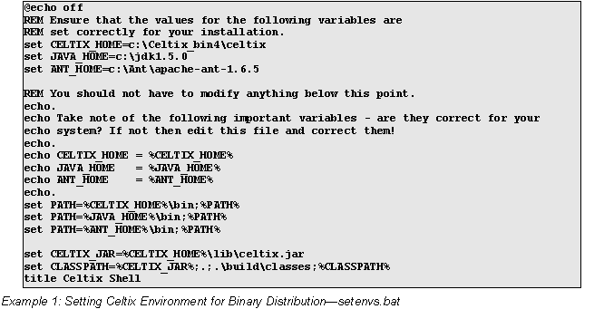
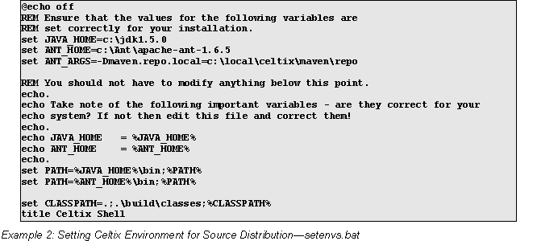
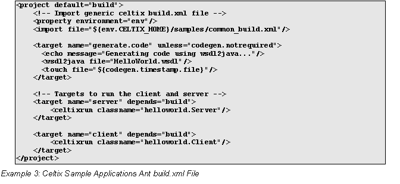
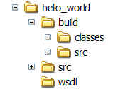
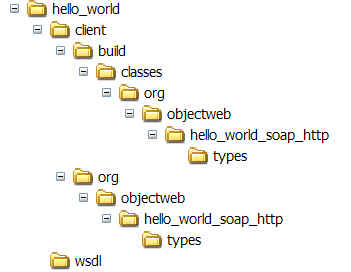
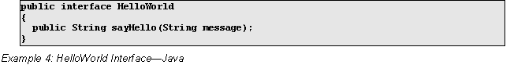
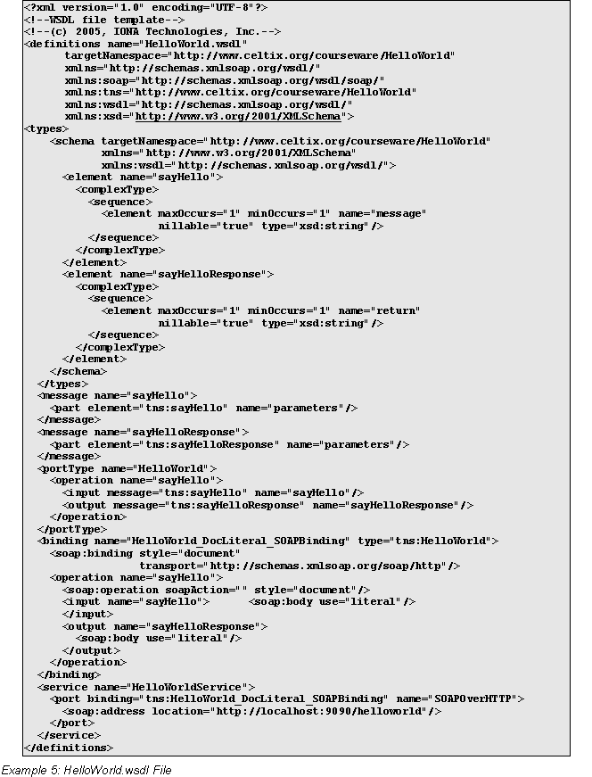
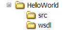
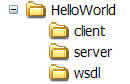

Getting Started with Celtix
Table of Contents
This document shows you how to get started with Celtix. It describes how to build and run a basic SOAP over HTTP client and server.
For information on how to install Celtix and set up your development environment, see The Celtix Installation Guide, which is included in the product download and is available from the Celtix website, http://celtix.objectweb.org/docs/index.html
This document was written for the Celtix 1.0 release. As Celtix matures future versions might deviate from the material covered in this document. The Celtix team will endeavor, however, to keep this document as up-to-date as possible.
The Celtix Installation Guide describes how to set up your development environment. To avoid having to set the environment variables for every command window, you can use a script. An example script, setenvs.bat, for use on Windows with the Celtix binary distribution, is shown below in Example 1.

A corresponding script for use on Windows with the Celtix source distribution is shown in Example 2. This script is only suitable for compiling and running Celtix applications when using the Apache Ant build system, as described in the rest of this document.

Developing applications with Celtix code is no different from developing with any other Java library or API. You set the CLASSPATH appropriately and begin coding. You can develop with your favorite text editor, Integrated Development Environment (IDE), or build system. In this section, we recommend two open-source tools that are used extensively by Celtix developers:
Eclipse
Apache Ant
Eclipse provides an excellent Java IDE for Celtix development. It is available from http://www.eclipse.org. Celtix requires you to use Eclipse 3.1.1 or higher. This is because Celtix requires support for Java 1.5 language constructs, which are only available in Eclipse 3.1.1 or higher.
Eclipse allows you to store collections of JARs and classes that can be reused across projects as “User Libraries”. To create a Celtix user library:
Open Eclipse and navigate to:
Window | Preferences | Java | Build Path | User Libraries
Create a new user library by selecting New and giving it a name, such as Celtix.
Highlight your newly created Celtix user library and select Add JARs. Add the celtix.jar file to the user library. In the Celtix binary distribution, the celtix.jar file can be found in the CELTIX_HOME/lib directory.
At the time of writing, Eclipse could not pick up the manifest classpath present in the celtix.jar file. As a result, you must add all of the JAX-WS JAR files to your user library as well. In the Celtix binary distribution these files can be found in the CELTIX_HOME/lib directory.
After you have created a user library for Celtix, you can add it to the Java project build path and Eclipse will auto-compile your code.
Many Java developers use the Apache Ant build system. It is available from http://ant.apache.org. The Celtix samples, available in the CELTIX_HOME/samples directory of your Celtix installation, include example Ant build files. Example 3 shows one such file.

The build file shown in Example 3 can be explained as follows:
Imports the common_build.xml file. The common_build.xml file includes most of the commands that compile and run the sample applications. It can be found in the CELTIX_HOME/samples directory of your Celtix installation.
The codegen.notrequired variable is true if no XSD or WSDL files in the project have changed since the last time the wsdl2java utility was run. If you do not declare wsdl.dir as a property that identifies the location of XSD and/or WSDL files, then the default value of ./wsdl is used.
The wsdl2java task generates Java code from the specified WSDL file.
The celtixrun task runs a Java class with the appropriate CLASSPATH and JVM argument settings for use with Celtix.
The common_build.xml and build.xml files that are supplied with the Celtix sample applications are useful models for building applications using a directory structure similar to that used by the Celtix samples.
How you arrange a project's directory structure depends on whether you are modeling your hierarchy on the Celtix samples, available in the CELTIX_HOME/samples directory of your Celtix installation, or using the Celtix wsdl2java utility to generate starting point code. The Celtix wsdl2java utility is a command-line utility that you can use to generate Java files from a specified WSDL file, including files that represent the types, service proxy, and service interface for an application, starting point code for the client and server mainlines, and the implementation object. Which files are generated is dependent of the command-line switches that you use. For more information on the wsdl2java utility, see the Celtix Command-Line Tools documentation, available at http://celtix.objectweb.org/docs/index.html.
The Celtix sample applications use the wsdl2java utility to generate files that represent the types, service proxy, and service interface for an application. The wsdl2java utility is not used to generate starting point code for the client and server mainlines or the implementation object. These files are provided as completed implementations so that the sample applications run without requiring the user to add processing logic.
The Celtix sample applications contain the following directories:
build/classes, which contains compiled Java classes, including those generated by the wsdl2java utility.
build/src, which contains Java source code generated by the wsdl2java utility.
src, which contains the supplied Java source code. These files can be in a different Java package than the Java source code files generated by the wsdl2java utility.
wsdl, which contains WSDL and XSD files.

The top-level project directory contains the Ant build file (build.xml).
As shown in Example 3 above, the build.xml file imports the common_build.xml file, which is located at the top level of the Celtix samples directory, CELTIX_HOME/samples.
The developer driven approach uses the wsdl2java utility to generate the complete complement of source code files, starting point code for the client mainline, server mainline, and implementation object. These files are included in the same Java package as the files representing the types, service proxy, and service interface.
Developer written Celtix applications contain the following directories:
A project directory that includes:
One, or more, top-level application directories that contain:
The source code files for the application. The source code files include both the files generated by the wsdl2java utility as well as any other files that you want to include in the application.
A build/classes subdirectory that contains the compiled application files.
The Ant build file (build.xml) generated by the wsdl2java utility.
A wsdl directory that contains WSDL and XSD files.
The following figure illustrates this directory hierarchy:
The project directory is hello_world.
The top-level application directory is client.
The source code generated by the wsdl2java utility is in the package hierarchies org/objectweb/hello_world_soap_http and org/objectweb/hello_world_soap_http/types under the hello_world/client directory. The package name was derived from the target namespace defined in the WSDL file.
The hello_world/client/build/classes directory includes the compiled code in the package hierarchies org/objectweb/hello_world_soap_http and org/objectweb/hello_world_soap_http/types.

The
wsdl directory contains the WSDL file used to generate the
application code.
This section describes how you can use Celtix to write a SOAP over HTTP client and server. Both the Celtix sample application approach and the developer driven approach are discussed.
The HelloWorld interface used in this section is defined in the HelloWorld.wsdl WSDL file shown in Example 5. It corresponds to the Java interface shown in Example 4. It is slightly different to the WSDL file used in the HelloWorld sample that is included with the Celtix distribution.


Use the Celtix sample application approach to build applications when working with the Celtix source distribution. In the Celtix source distribution, the collection of JAR files that comprise the Celtix product are distributed throughout the product directories. As a result, it is somewhat involved to list all of these JAR files on the CLASSPATH. When you use the Celtix sample application approach, the common_build.xml file correctly sets the CLASSPATH.
To use the Celtix sample application approach, do the following:

Replicate
the directory hierarchy used in the sample applications. For
instance, using the HelloWorld
interface described in Example 4 as an example, create the following
directory structure:
Place your WSDL file into the wsdl directory. For example, place the the HelloWorld.wsdl file, shown in Example 5 in the wsdl directory.
Copy a build.xml file from one of the sample applications and modify it as required. For example, place the build.xml file shown in Example 6 in the top-level HelloWorld directory.
Write the client mainline, server mainline, and implementation object source code files and add them to the src directory.
Use Ant to generate code for the type, service proxy, and service interface files and to compile the applications. For example, from the top-level HelloWorld directory, issue the ant build command. This creates the build/classes directory hierarchy and generates the type, service proxy, and service interface files, and compiles the applications.
Use Ant to run the client and server applications. For example, from the top-level HelloWorld directory, issue the ant server and ant client commands to run the client and server applications.
The developer driven approach refers to an approach in which you use the Celtix wsdl2java utility to generate an Ant build.xml file that accurately lists all Celtix JARs on the CLASSPATH. This approach is suitable when you are working with the Celtix binary distribution.
To use the developer driven approach, do the following:
Create the project directory structure as shown below:

Place the WSDL file into the wsdl directory. Use the HelloWorld.wsdl file shown in Example 5 as an example.
Use the wsdl2java utility to generate the starting point code, including the client mainline, for the client application. For example, from the HelloWorld top-level directory, issue the following command:
Use the wsdl2java utility to generate starting point code, including the server mainline and implementation object, for the server application. For example, from the HelloWorld top-level directory, issue the following command:
Complete coding the client mainline and implementation object.
The wsdl2java utility creates an Ant build.xml file in each of the top-level application directories—client and server. Issue the command ant build in each of these directories to compile your applications.
You can use Ant to run each of the applications. The actual syntax of the command depends on the name of the port type defined in the WSDL file. For example, in the HelloWorld.wsdl file, the port type is called HelloWorld, and the build.xml file targets used to run the client and server applications are HelloWorld.Client and HelloWorld.Server.
The Celtix runtime uses the java.util.logging framework. You can configure Celtix logging levels by pointing the JVM to a logging.properties file by defining the JVM system variable java.util.logging.config.file. Celtix provides a default logging.properties file in the etc directory, so you can use:
To run the server application using java, move to the server/build/classes directory and issue the following command:
To run the client application, move to the client/build/classes directory and issue the following command:
Note that you must supply the relative, or absolute, path to the WSDL file when running the client.